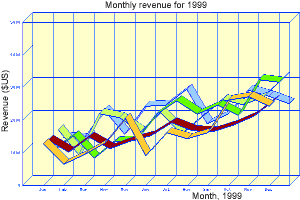

| Packages: |
|
GDGraph3d, GD::Graph, GD, GDTextUtil, PDL
......... CPAN zlib ............ ftp://ftp.freesoftware.com/pub/infozip/zlib/zlib.tar.gz libpng .................................... ftp://ftp.cdrom.com/pub/png/src/ lttf ...................... http://freetype.sourceforge.net/download.html jpeg-6b ....................................... ftp://ftp.uu.net/graphics/jpeg/ libgd .................................. ftp://ftp.boutell.com/pub/boutell/gd/ |
When it comes to understanding large amounts of data, we humans have two stages of interpretation. First, we analyze the data, organizing it in myriad ways to find the hidden relationships, quantities, and trends that deliver meaning to our world. Second, we present it somehow, often by displaying it visually. With graphs and charts we can visualize trends, understand relationships, and compare quantities at a glance.
Figure 1: Sample
GDGraph3d output.
Over the course of the last year I developed the Perl package GDGraph3d as part of a statistics presentation tool I work on for analyzing the huge amounts of data available to and generated by web servers. Report Magic for Analog, our companion presentation package for the Analog web site statistics analysis tool, uses GDGraph3d to present Analog's log file analyses in a friendly manner with graphs like Figure 1.
GDGraph3d is an extension to Martien Verbruggen's GD::Graph package. GD::Graph draws only two-dimensional images (except for the 3d option on pie charts), but provides the basis for data management, labeling, legends and other routine graph operations that are common to both packages.
In order to use GDGraph3d, you will need to install several packages: at a minimum, the GD::Graph and GD Perl modules, and the libgd library. Fortunately for Windows and Mac users, GD and the libgd library are included in ActivePerl and MacPerl. If you have ActivePerl, you can use the PPM or VPM tool to acquire the latest version of GD. With PPM you can simply use this command:
> ppm install GD
On Unix (and Unix-like) systems, the installation is a lot more complex. libgd is a C library that itself depends on the libpng and zlib libraries. If you want TrueType font support (recommended if you're using a character set other than Latin-1 or Latin-2) you'll need FreeType's lttf. In order to build GD on top of libgd, you will also need to install the jpeg-6b library. Complete details for installing this are listed on the libgd website (http://www.boutell.com/gd/); a summary is available in the sidebar, Installing GD.
Installing GD::Graph and GDGraph3d should be fairly simple. Both are located on CPAN and can be found through the CPAN search engine at http://search.cpan.org. You'll also need to install the GDTextUtil package, which you can find there as well.
Once you have all the proper modules and libraries installed, it's time to write some code and make some pictures. Listing 1 contains a simple script to generate the graph in Figure 2. We'll go through the script line by line.
Figure 2: The output of
Listing 1.
The first line tells Perl which graph module you want to use. With both GD::Graph and GDGraph3d, you use the type of graph you wish to make. So in this instance, since we are making a line graph, we use GD::Graph::lines3d.
The next set of lines creates a data structure containing the data to be graphed. GDGraph3d uses an array of an array of values. The first row holds the labels for the x -axis, and the subsequent rows are the data for each line of the graph. In this example, we've coded the values by hand, but in a real application, you'd get these from a database, an external file, or some other source. Check out the GD::Graph::Data class for methods that make it easy to read data from delimited text files and DBI sources.
On line 14 we create a new graph "lines3d" object. GDGraph3d objects cannot be reused - you create a new one for each set of data you wish to plot.
Lines 17 to 21 set several self-explanatory options for the graph. GDGraph3d supports all the options that GD::Graph does (and there are many), as well as a few options specifically for three-dimensional output (like the z-directional depth of the lines). We'll go into more detail below about using options to improve the look of the graph.
Line 24 tells GDGraph3d to plot the data to an image. The plot method returns a reference to a GD image object. If you wish, you can further process this image with additional GD methods.
Because the GD library can output in different formats (GIF, PNG, JPEG, and so on) GDGraph3d offers a method to return the default format. For new installations, this call will return png. If you happen to have an old version of GD and libgd on your system, this returns the patent-infringing gif.
Now, using the format that GDGraph3d found for us, we can write the contents of the image to a file on the system: in our example, either sample.png or sample.gif. The binmode call is included for systems that make a distinction between binary and text files (like Windows). On other systems, this has no effect.
GD::Graph and GDGraph3d allow you to adjust the graph in many ways. We'll start by setting some colors. GDGraph3d has 29 predefined colors (white, lgray, gray, dgray, black, lblue, blue, dblue, gold, lyellow, yellow, dyellow, lgreen, green, dgreen, lred, red, dred, lpurple, purple, dpurple, lorange, orange, pink, dpink, marine, cyan, lbrown, and dbrown) or can accept any RGB color defined with HTML syntax. To set the colors, we'll add some key/value pairs to the $graph->set() statement so that it looks like this:
# Set some labels
$graph->set(
x_label => 'Month, 1999',
y_label => 'Revenue ($US)',
title => 'Monthly revenue for 1999',
dclrs => ['#9999CC', '#CCCC66', '#339900',
'#990000', '#FFCC33'],
boxclr => '#FFFFCC',
long_ticks => 1,
);
dclrs sets a list of colors to use for each data set, boxclr sets the color to use in the background of the plot, and setting long_ticks to a true value tells GDGraph3d to draw a grid on the background (connecting all the ticks). See Figure 3 for the results.
Figure 3: Choosing
colors.

Now let's work on the fonts. GDGraph3d uses GD's font mechanisms (through GD::Text). This means, that by default, you can choose one of five predefined fonts, defined in the GD::Font class (GD::Font->Small, GD::Font->Large, GD::Font->MediumBold, GD::Font->Tiny, or GD::Font->Giant). If you built libgd with TrueType support (ActiveState's build includes this on Win32), then you can also use TrueType fonts (if you give the full pathname to the font). For this example, we'll use built-in fonts and insert these three lines after the $graph->set() call to specify the fonts to use for the title above the graph and the labels on each axis:
$graph->set_title_font( GD::Font->Giant ); $graph->set_x_label_font( GD::Font->MediumBold ); $graph->set_y_label_font( GD::Font->MediumBold );
We'd also like to add a legend to the graph so that the people who see it know what each line refers to. First, we add these key/value pairs to the $graph->set() statement:
legend_placement => 'RC', legend_spacing => 10,
(RC means "Right Center".) We also add these two new statements later to create the legend, by defining the labels associated with each data set and setting the font for the legend text.
# Define a legend
$graph->set_legend( 'Affiliate A', 'Affiliate B', 'Affiliate C',
'Affiliate D', 'Affiliate E' );
$graph->set_legend_font( GD::Font->MediumBold );
The result is shown in Figure 4.
Figure 4: Specifying
fonts and adding a legend.
There is a lot more you can do with GDGraph3d. For example, you could format the y -axis labels to include the "$" sign, or you could adjust the maximum y -value by hand to better fit the data, as shown in Figure 5. Read the documentation in GD::Graph and GDGraph3d for details on the options and settings available.
Like many Perl modules, GDGraph3d is a work in progress. One of the first improvements I would like to make is to add shading to the faces. I'd also like to include a drop-shadow option for the pie charts. The drop-shadow rendering could be improved to look more shadow-like, although it would slow down graph generation. I would also like to complete three-dimensional versions of the point, area, and point-and-line graphs available in GD::Graph. Finally, the ultimate goal of GDGraph3d would be to handle the projections for any viewing angle.
Figure 5: Bells and
whistles.
GDGraph3d isn't meant to meet the needs of all applications. There are now a number of graphing modules available for Perl, mainly differentiated by which graphics library they require under the hood. GDGraph3d also does not provide for graphing of true three-dimensional data - it merely graphs two-dimensional data with a three-dimensional extrusion. For real three-dimensional rendering, users should use the Perl Data Language (PDL) and its associated graphing and rendering modules.
Installing GD_ _END_ _
Jeremy Wadsack (jwadsack@wadsack-allen.com) is a web site analysis consultant for the Wadsack-Allen Digital Group (http://www.wadsack-allen.com/digitalgroup/), a division of the Wadsack-Allen publishing company in Flagstaff, Arizona.